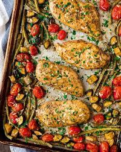

Italian Chicken

This Italian Chicken recipe was a knock out at our families 4th of July party! It's a very simple recipe aimed at those of us who love great food but dont have the time to go overboard in the kitchen.
This recipe recommends an outdoor grill, propane is easiest and preffered, but you may use a kitchen oven. Also, the marinade is best when left for 24hrs but a quick basting an hour before dinner will work in a pinch.
Ingredients
- Chicken
- Italian Dressing
- Salt
- Pepper
- Water
- Chicken Broth
- Olive Oil
Steps
- Assemble the ingredients
- Preheat the grill to 400F
- Remove the chicken from the Italian Marinade and place on the grill.
- While chicken is cooking, boil the remaining marinade to be used as a basting when the chicken is cooked.
- Cook the chicken on each side for at least 6 minutes.
- Use a meat thermometer to ensure an internal temperature of 165F.
- Let chicken cool before serving. Enjoy!